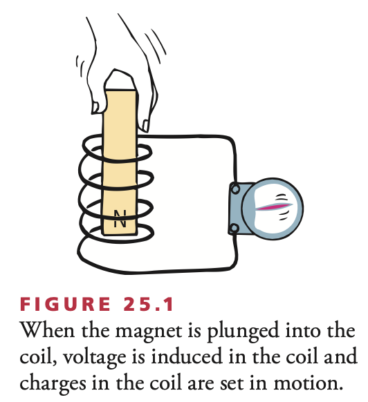
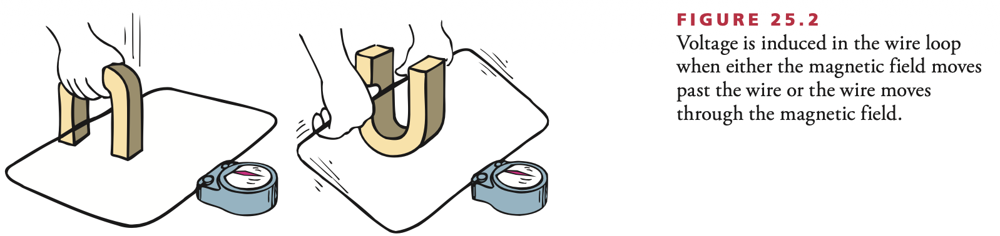
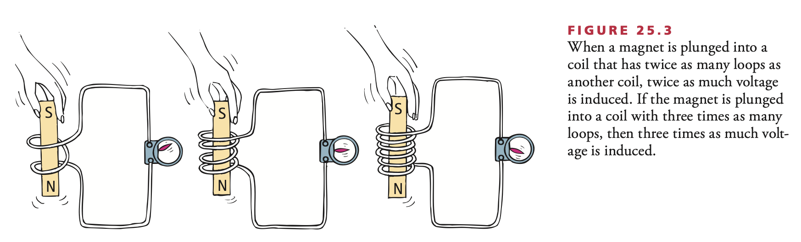
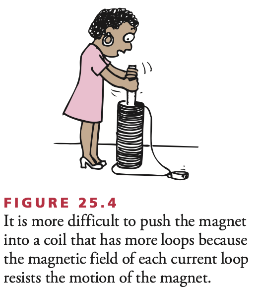
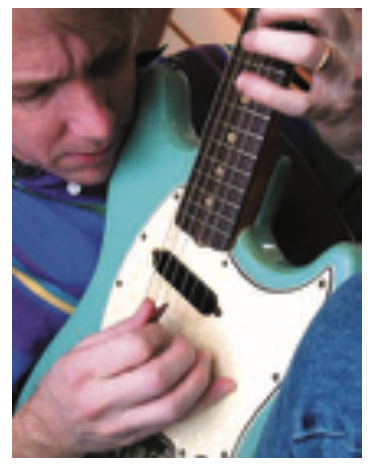
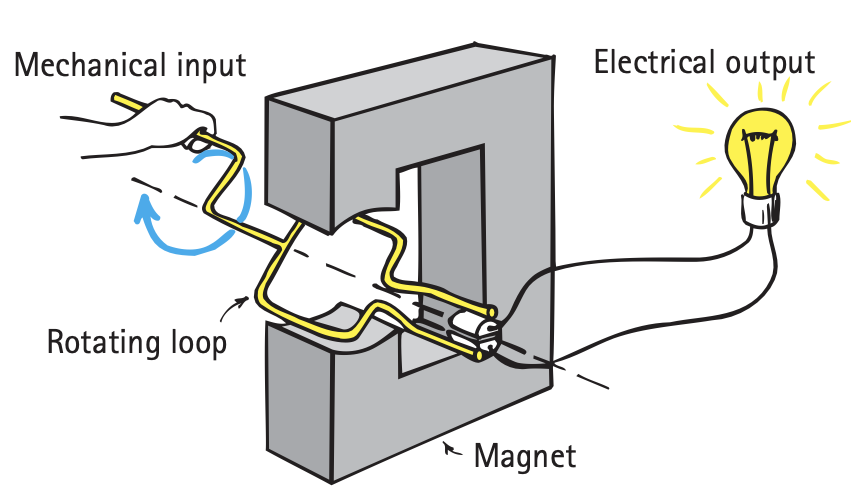
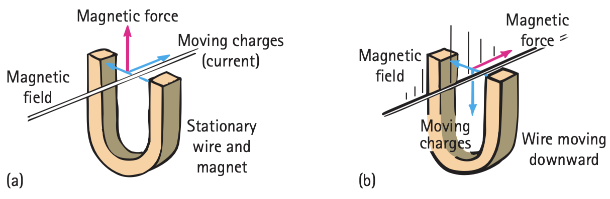
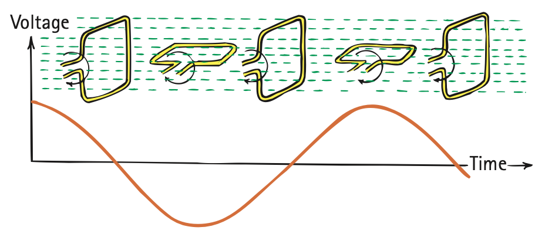
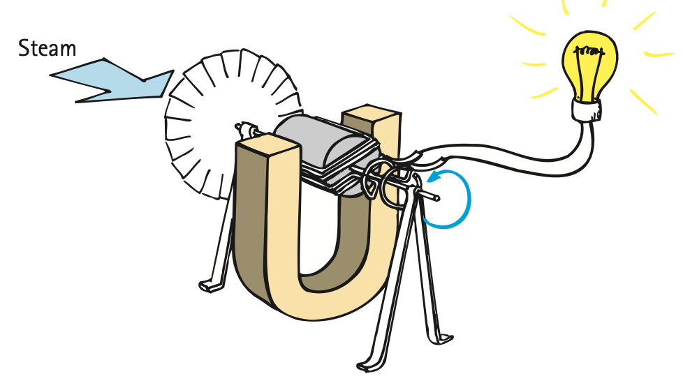
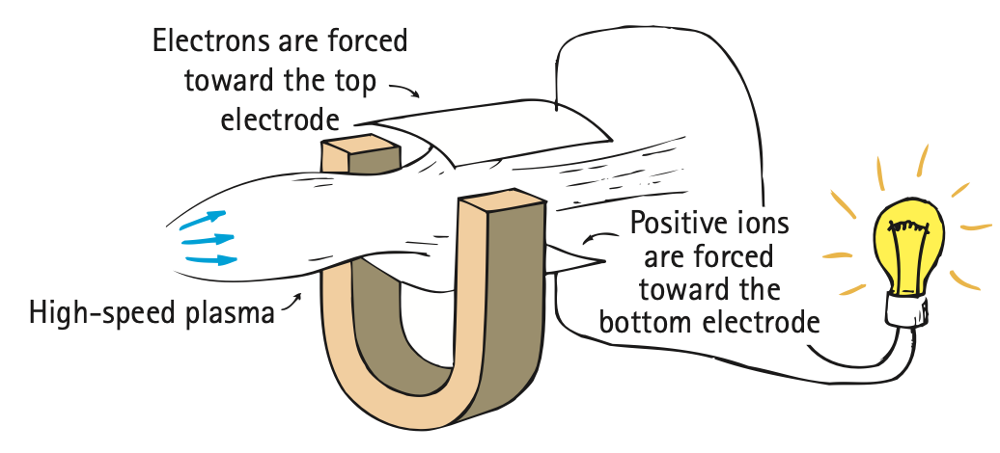

Students will explain how changing magnetic fields produce electric effects and how this principle is used to generate and transfer energy.
Before you begin reading, use a talk-to-the-text strategy:
Student Task: Skim the headings, subheadings, and images first. Then write at least one thing you expect to learn in this section and at least one question you think the reading might answer.
I expect to learn...
Questions I think this reading might answer...
Faraday and Henry both discovered that electric current can be produced in a wire simply by moving a magnet in or out of loops. No battery or other voltage source is needed—only the motion of a magnet in a wire loop. This phenomenon of inducing voltage by changing the magnetic field in loops of wire is called electromagnetic induction. Voltage is caused, or induced, by the relative motion between a wire and a magnetic field—that is, whether the magnetic field of a magnet moves near a stationary conductor or the conductor moves in a stationary magnetic field.


Teacher Note
Listen for two pieces: they discovered that current can be produced without a battery, and induction requires a changing magnetic field in the coil.
Push students to say “change,” not just “magnet.”
Stop and check:
What important discovery did physicists Michael Faraday and Joseph Henry make, and what must change in order for electromagnetic induction to occur in a wire coil?
Answer: Faraday and Henry discovered that electric current can be produced in a wire by changing the magnetic field in loops of wire. For induction to occur, the magnetic field in the coil must change.
The greater the number of loops of wire that move in a magnetic field, the greater the induced voltage. Pushing a magnet into a coil with twice as many loops induces twice as much voltage; pushing it into a coil with 10 times as many loops induces 10 times as much voltage. It may seem that we get something, energy, for nothing simply by increasing the number of loops in a coil of wire. But, assuming that the coil is connected to a resistor or other energy-dissipating device, we do not. We find that it is more difficult to push the magnet into a coil made up of a greater number of loops.


This is because the induced voltage makes a current, which makes an electromagnet, which repels the magnet in our hand. More loops mean more voltage, which means we do more work to induce it. The amount of voltage induced depends on how fast the magnetic field lines are entering or leaving the coil. Very slow motion produces hardly any voltage at all. Quick motion induces a greater voltage.
Teacher Note
Key idea: EMI is a method of transforming mechanical energy into electric energy. It is not an energy source.
Listen for: more loops means more work is required.
Discussion Question
Is electromagnetic induction an energy source? Use the reading to defend your answer.
Answer: No. Electromagnetic induction is not an energy source. It is a method of transforming mechanical energy into electric energy, and work must be done to produce the induced energy.
Important idea:
Changing a magnetic field in a closed loop induces voltage. If the loop is in an electric conductor, then current is induced.
Electromagnetic induction is all around us. On the road, it triggers traffic lights when a car drives over—and changes the magnetic field in—coils of wire beneath the road surface. Hybrid cars utilize it to convert braking energy into electric energy in their batteries. We sense electromagnetic induction in the security systems of airports as we walk through upright coils and, if we are carrying any significant quantities of iron, change the magnetic field of the coils and trigger an alarm. We use it with an ATM card when its magnetic strip is swiped through a scanner. As we shall see later, it even underlies electromagnetic waves.
Electromagnetic induction is summarized by Faraday’s law, which states that the induced voltage in a coil is proportional to the product of its number of loops, the cross-sectional area of each loop, and the rate at which the magnetic field changes within those loops.
Faraday’s law
The induced voltage in a coil is proportional to the product of its number of loops, the cross-sectional area of each loop, and the rate at which the magnetic field changes within those loops.
The amount of current produced by electromagnetic induction depends not only on the induced voltage but also on the resistance of the coil and the circuit to which it is connected. For example, we can plunge a magnet in and out of a closed loop of rubber and in and out of a closed loop of copper. The voltage induced in each is the same, provided that the loops are the same size and the magnet moves with the same speed. But the current in each is quite different. Electrons in the rubber sense the same electric field as those in the copper, but their bonding to the fixed atoms prevents the movement of charge that so freely occurs in copper.
Teacher Note
Push students to distinguish voltage from current. Voltage may be the same, but current also depends on resistance and the ability of charges to move.
Think carefully:
If voltage is induced in both rubber and copper, why is the current different? What does this tell you about the relationship between voltage and current?
Answer: The current is different because current depends not only on induced voltage but also on resistance. Charges move freely in copper but not in rubber, so the same voltage can produce very different currents.
We have mentioned two ways in which voltage can be induced in a loop of wire: by moving the loop near a magnet and by moving a magnet near the loop. There is a third way, by changing a current in a nearby loop. All three cases possess the same essential ingredient—a changing magnetic field in the loop.
Teacher Note
Students should name: moving a magnet near a loop, moving a loop near a magnet, and changing current in a nearby loop.
Common idea: a changing magnetic field in the loop.
Discussion Question
State Faraday’s law in words. Then explain the three ways in which voltage can be induced in a loop of wire and identify the one common idea they all share.
Answer: Faraday’s law states that the induced voltage in a coil is proportional to the number of loops, the area of each loop, and the rate at which the magnetic field changes within those loops. Voltage can be induced by moving a magnet near a loop, moving a loop near a magnet, or changing current in a nearby loop. All three methods involve a changing magnetic field in the loop.

Guitar pickups provide a useful real-world example. Tiny coils with magnets inside them magnetize the steel strings. When the strings vibrate, the magnetic field in the coils changes, voltage is induced, and the resulting signal is boosted by an amplifier and turned into sound by a speaker. The details are different from pushing a bar magnet into a coil, but the key idea is the same: a changing magnetic field is what matters.
When one end of a magnet is repeatedly plunged into and back out of a coil of wire, the direction of the induced voltage alternates. As the magnetic field strength inside the coil is increased, as the magnet enters the coil, the induced voltage in the coil is directed one way. When the magnetic field strength diminishes, as the magnet leaves the coil, the voltage is induced in the opposite direction. The frequency of the alternating voltage that is induced equals the frequency of the changing magnetic field within the loop.
It is more practical to induce voltage by moving a coil than by moving a magnet. This can be done by rotating the coil, or loop, in a stationary magnetic field. This arrangement is called a generator. The construction of a generator is, in principle, identical to that of a motor. They look the same, but the roles of input and output are reversed. In a motor, electric energy is the input and mechanical energy is the output; in a generator, mechanical energy is the input and electric energy is the output. Both devices simply transform energy from one form into another.

Teacher Note
Listen for: the frequency of the alternating voltage equals the frequency of the changing magnetic field.
Generator and motor are same basic construction, reversed energy flow.
Discussion Question
How does the frequency of induced voltage relate to how frequently a magnet is plunged in and out of a coil of wire? What are the basic differences and similarities between a generator and an electric motor?
Answer: The frequency of the induced voltage equals the frequency of the changing magnetic field, so it matches how often the magnet is moved in and out. A generator and a motor are similar in construction, but a motor converts electrical energy to mechanical energy, while a generator converts mechanical energy to electrical energy.
It is interesting to compare the physics of a motor and a generator and to see that both operate according to the same underlying principle: that moving electrons experience a force that is mutually perpendicular to both their velocity and the magnetic field they traverse. We call the deflection of the wire, motion as a result of current, the motor effect, and we call what happens as a result of the law of induction, current as a result of motion, the generator effect. Study them. Can you see that the two effects are related?

Teacher Note
Push students toward the common underlying principle: moving charges experience a force perpendicular to both their velocity and the magnetic field.
Think deeper:
How are the motor effect and generator effect related? In one case current causes motion; in the other motion causes current. What stays the same underneath both effects?
Answer: They are related because both depend on the same underlying principle: moving charges experience a force perpendicular to both their motion and the magnetic field. In the motor effect, current leads to motion. In the generator effect, motion leads to current.
We can see the electromagnetic induction cycle when a loop of wire rotates in the magnetic field. There is a change in the number of magnetic field lines within the loop. When the plane of the loop is perpendicular to the field lines, the maximum number of lines is enclosed. As the loop rotates, fewer lines are enclosed. When the plane of the loop is parallel to the field lines, none are enclosed. Continued rotation increases and decreases the number of enclosed lines in a cyclical fashion, with the greatest rate of change occurring when the number of enclosed lines goes through zero. Hence, the induced voltage is greatest as the loop rotates through its parallel-to-the-lines orientation.

Because the voltage induced by the generator alternates, the current produced is ac, alternating current. The alternating current in our homes is produced by generators standardized so that the current goes through 60 cycles of change each second—60 hertz.
Teacher Note
This is direct reading-check retrieval. Students should say AC and 60 hertz.
Stop and check:
Is the current that is produced by a common generator ac or dc? What is the common frequency of ac in homes in the United States?
Answer: A common generator produces alternating current, ac. The common household frequency in the United States is 60 hertz.
Fifty years after Michael Faraday and Joseph Henry discovered electromagnetic induction, Nikola Tesla and George Westinghouse put those findings to practical use and showed the world that electricity could be generated reliably and in sufficient quantities to light entire cities.
Tesla built generators much like those in operation today, but quite a bit more complicated than the simple model we have discussed. Tesla’s generators had armatures—iron cores wrapped with bundles of copper wire—that were made to spin within strong magnetic fields by means of a turbine, which, in turn, was spun by the energy of steam or falling water. The rotating loops of wire in the armature cut through the magnetic field of the surrounding electromagnets, thereby inducing alternating voltage and current.

We can look at this process from an atomic point of view. When the wires in the spinning armature cut through the magnetic field, oppositely directed electromagnetic forces act on the negative and positive charges. Electrons respond to this force by momentarily swarming relatively freely in one direction throughout the crystalline copper lattice; the copper atoms, which are actually positive ions, are forced in the opposite direction. Because the ions are anchored in the lattice, however, they hardly move at all. Only the electrons move, sloshing back and forth in alternating fashion with each rotation of the armature. The energy of this electronic sloshing is tapped at the electrode terminals of the generator.
Teacher Note
Students should include Faraday and Henry for discovery, Tesla and Westinghouse for practical use, define armature, and mention steam or falling water as common turbine inputs.
Stop and check:
Who discovered electromagnetic induction, who put it to practical use, what is an armature, and what commonly supplies the energy input to a turbine?
Answer: Michael Faraday and Joseph Henry discovered electromagnetic induction. Nikola Tesla and George Westinghouse put it to practical use. An armature is an iron core wrapped with bundles of copper wire that spins within a magnetic field in a generator. A turbine is commonly powered by steam or falling water.
An interesting device similar to the turbogenerator is the MHD, magnetohydrodynamic, generator, which eliminates the turbine and spinning armature altogether. Instead of making charges move in a magnetic field by a rotating armature, a plasma of electrons and positive ions expands through a nozzle and moves at supersonic speed through a magnetic field. Like the armature in a conventional generator, the motion of charges through a magnetic field gives rise to a voltage and flow of current in accordance with Faraday’s law of induction. Whereas in a conventional generator brushes carry the current to the external load circuit, in the MHD generator the same function is performed by conducting plates, or electrodes.

Unlike the turbogenerator, the MHD generator can operate at any temperature to which the plasma can be heated, either by combustion or by nuclear processes. The high temperature results in a high thermodynamic efficiency, which means more power for the same amount of fuel and less waste heat. Efficiency is further boosted when the waste heat is used to convert water into steam to run a conventional steam-turbine generator.
It is important to know that generators do not produce energy—they simply convert energy from some other form to electric energy. Energy from a source, whether fossil or nuclear fuel or wind or water, is converted to mechanical energy to drive the turbine. The attached generator converts most of this mechanical energy to electric energy. Some people think that electricity is a primary source of energy. It is not. It is a carrier of energy that requires a source.
Teacher Note
Key idea: a generator converts energy but does not create it. For MHD, push students to notice no turbine or spinning armature; plasma moves through magnetic field instead.
Discussion Question
Is it correct to say that a generator produces energy? Defend your answer. Then explain the principal differences between an MHD generator and a conventional generator.
Answer: No. A generator does not produce energy; it converts energy from some other form into electric energy. In a conventional generator, a turbine spins an armature through a magnetic field. In an MHD generator, high-speed plasma moves through a magnetic field, so there is no turbine or spinning armature in the same sense.
The creation of voltage when a magnetic field changes with time.
The induced voltage in a coil is proportional to the number of loops, the area of the loops, and the rate at which the magnetic field changes.
An electromagnetic induction device that produces electric current by rotating a coil within a stationary magnetic field.
Current that repeatedly changes direction.
An iron core wrapped with bundles of copper wire that spins within a magnetic field in a generator.
A device driven by steam, falling water, or another energy source that provides mechanical input to a generator.
A magnetohydrodynamic generator in which high-speed plasma moves through a magnetic field to produce voltage and current.
Faraday’s Law Relationship
Voltage induced is proportional to:
\[ \text{number of loops} \times \text{area of each loop} \times \frac{\Delta \text{magnetic field}}{\Delta \text{time}} \]Frequency of household alternating current in the United States
60 hertz
Teacher Note
Use early DOK items for quick retrieval and explanation. DOK 3–4 items work especially well for Showdown, Numbered Heads Together, or Traveling Salesman because students must justify energy flow and induction reasoning.
1. What important discovery did Faraday and Henry make?
Answer: They discovered that electric current can be produced in a wire by changing the magnetic field in loops of wire.
2. What must change in order for electromagnetic induction to occur?
Answer: The magnetic field in the loop must change.
3. State Faraday’s law.
Answer: Faraday’s law states that the induced voltage in a coil is proportional to the number of loops, the area of the loops, and the rate at which the magnetic field changes within those loops.
4. What are the three ways voltage can be induced in a loop?
Answer: By moving a magnet near a loop, moving a loop near a magnet, or changing current in a nearby loop.
5. Why does increasing the number of loops increase the induced voltage?
Answer: More loops intercept more of the changing magnetic field, so the induced voltage increases.
6. Why is it harder to push a magnet into a coil with more loops?
Answer: More loops mean more induced current and a stronger electromagnet in the coil, which resists the motion of the magnet.
7. Explain why rubber and copper can have the same induced voltage but different currents.
Answer: The same voltage can be induced in both materials, but current also depends on resistance. Charges move freely in copper but not in rubber, so the current is very different.
8. Why does faster motion produce more induced voltage?
Answer: Faster motion changes the magnetic field in the loop more quickly, which increases the induced voltage.
9. Explain how a generator converts mechanical energy into electrical energy.
Answer: A generator rotates a coil in a magnetic field, changing the magnetic field through the loop and inducing voltage and current, converting mechanical energy into electrical energy.
10. Compare a generator and a motor in terms of energy flow.
Answer: A motor converts electrical energy into mechanical energy, while a generator converts mechanical energy into electrical energy.
11. Explain why the current produced by a generator is alternating.
Answer: As the loop rotates, the direction of the induced voltage reverses periodically, so the current alternates.
12. Why does a changing magnetic field produce voltage but a constant field does not?
Answer: Induction depends on change in the magnetic field. A constant field does not produce the changing conditions needed to induce voltage.
13. Design an experiment to demonstrate electromagnetic induction.
Sample Answer: Move a bar magnet in and out of a coil connected to a galvanometer. Observe the needle movement when the magnet moves and no movement when it is still.
14. Explain why a generator cannot be considered an energy source.
Answer: A generator does not create energy. It converts mechanical energy from another source into electrical energy.
15. Evaluate how electromagnetic induction is used in a real-world system of your choice.
Sample Answer: In traffic-light sensors, a car changes the magnetic field in coils under the road, which induces electrical effects that help trigger the signal.
Teacher Note
Best used as an end-of-section check, a Day 3 warm-up, or an exit ticket. Push students to explain where the answer came from in the reading instead of giving only a letter.
1. What causes electromagnetic induction?
Answer: B) A changing magnetic field
2. What is the unit of frequency used for AC?
Answer: C) Hertz
3. Increasing the number of loops in a coil will:
Answer: B) Increase voltage
4. Which situation produces induction?
Answer: B) A magnet moving through a coil
5. Which best explains why a generator produces AC?
Answer: A) The loop rotates, changing direction of voltage
6. Why does a generator require energy input?
Answer: B) It converts mechanical energy to electrical energy
7. Which statement best evaluates the idea that a generator produces energy?
Answer: B) It violates conservation of energy
8. Brief Task: Explain how energy is transferred in a generator system from source to electrical output.
Sample Answer: Energy from a source such as steam or falling water turns a turbine, which rotates the generator armature in a magnetic field. That motion induces voltage and current, converting mechanical energy into electrical energy.